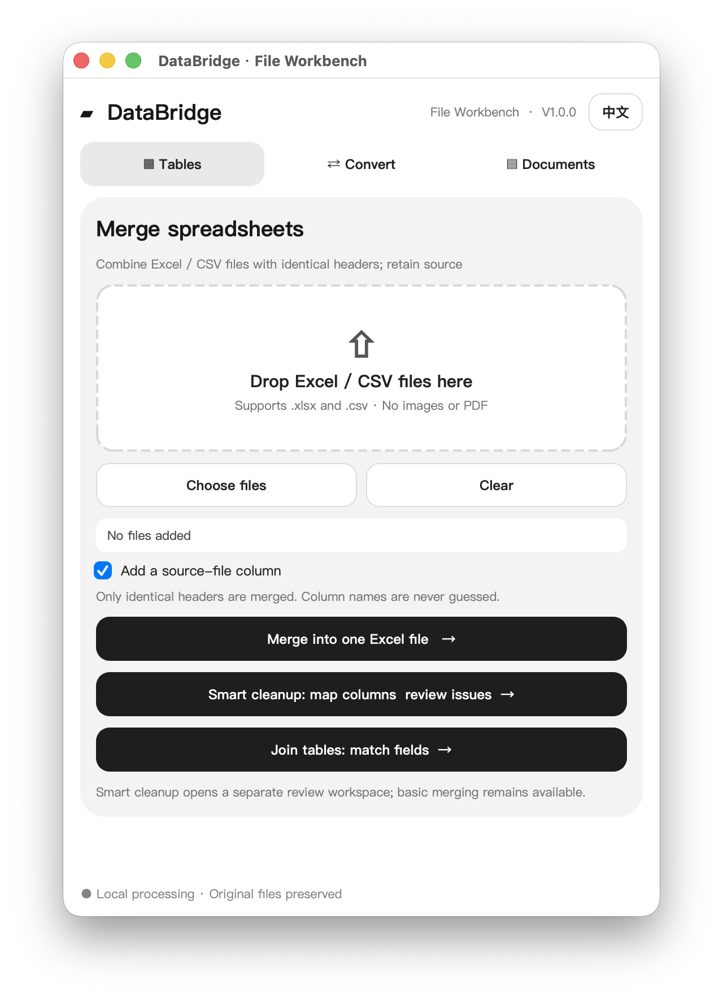

Stop wasting time on
repetitive file work.
Normalize mismatched spreadsheets, merge tables, cross-check lists, and convert media—all processed locally on your computer.
Public Beta 1.1.1 · macOS (Apple Silicon) & Windows (64-bit)
Mismatched headers? Normalize and combine with confidence.
Quotes and sales lists from different sources rarely share identical column names. DataBridge recognizes common header aliases, suggests mappings, highlights anomalies, and lets you review everything before exporting.
Local processing on macOS & Windows. Safe Output protection preserves original files.


The tools you need, in one desktop app.
Handle spreadsheets, images, media files, and documents without juggling multiple clunky converters.
Spreadsheet Merge & Cleanup
Supports batch merging sheets with identical headers, as well as suggesting field alias mappings (like item name) for supplier quotes. Critical fields require human confirmation; no automatic tax rate guessing.
Dual-Table Key Matching
Match customer lists, orders, or inventory by a shared key field (such as phone or SKU). Preview matched results and highlight unmatched records instantly without complex formulas.
AI Notes & Tables to Word
Export Markdown text, AI drafts, and clipboard tables into standard Word (.docx) documents, preserving primary headings, paragraphs, and table layouts without tedious manual reformatting.
Image Format Conversion
Convert supported image formats such as WEBP, PNG, and JPG. Output quality depends on the selected format and settings.
Built-in Local Media Conversion
Built-in local media conversion. Convert supported audio and video formats. Output quality depends on the selected format and settings.
Safe Output & Protection
Non-destructive Safe Output architecture ensures original files are never overwritten; outputs are saved as new files. Core processing runs on your local desktop without requiring cloud uploads.
Core file processing stays on your machine.
Whether processing supplier quotes, customer lists, or media files, DataBridge performs file conversions and spreadsheet operations locally on your computer. Your document content is never uploaded to remote processing servers, and no registration is required to use local tools.
Less time fixing files, more time on real work.
Mismatched quotes, tedious list checks, and incompatible media shouldn't take up your entire afternoon.
Mismatched supplier quotes?
Different suppliers use different column names: one labels it "Item Name", another "Product Code". DataBridge suggests alias mappings while requiring human confirmation for business-critical fields—without automatic tax rate guessing—to export a standardized workbook.
Lost in manual spreadsheet cross-checks?
Need to match sales records against customer lists? Link two tables instantly by a shared key field to preview matched rows and identify unmatched entries without writing formulas.
Frustrated by incompatible file formats?
WEBP pictures that won't paste into presentations, MOV videos that fail in Windows players, or AI reports losing table columns. Convert them cleanly right on your desktop.
DataBridge Online.
Clean, merge, and compare spreadsheets right in your browser. No installation needed. In development. Not available yet.
Get DataBridge 1.1.1.
Public beta for macOS (Apple Silicon) and Windows (64-bit).
Community Beta Notice: macOS: If blocked, click 'Open Anyway' in System Settings → Privacy & Security. Windows: If SmartScreen appears, click 'More info' → 'Run anyway'.